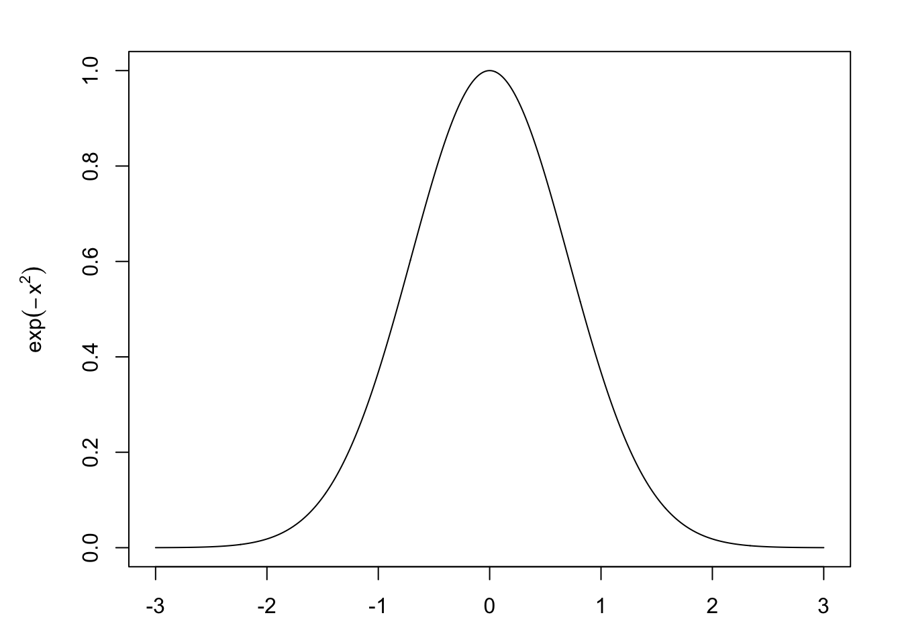

One common issue that happens to new students of statistics and probability is attempting to remember probability density/mass functions and common integrals and sums needed to compute expected values, variances, marginal distributions, or posterior distributions. There are a few integrals and sums that come up over and over again and using the PDF (probability density function) or PMF (probability mass function) can help us remember these.
Poisson Distribution
First we start with Poisson distribution. This distribution is supported on the non-negative integers \(0, 1, \ldots\) If \(X \sim \operatorname{Pois}(\lambda)\) then, \[ P(X = x \mid \lambda) = \frac{\lambda^x}{x!} \exp(-\lambda) \] Now, when I was first learning probability I always had a hard time remembering this pmf. Is it \(x^\lambda\) or \(\lambda^x\) in the numerator? \(\lambda!\) or \(x!\) in the denominator? First, we need to think about what the Poisson distribution can model. We can think of the Poisson distribution as the number of independent events that occur in a given time period \([0, t]\). The mean number of events in \(\mu\). If we let \(Y\) be the arrival time of the first event, then \(Y\) is exponentially distributed with rate \(\lambda / t\) or mean \(t / \lambda\).
So, the first step to notice is that we have alignment between the distributions when \(P(X = 1 \mid \lambda) = \lambda \exp(- \lambda) = f(1 \mid \lambda)\) . The key part to remember is that we have \(\exp(-\lambda)\). If you remember this then the rest of the pmf of the Poisson distribution is easy to remember. Since this is a pmf, it needs to sum to 1 over all \(0,1,\ldots\) We have \[ \begin{aligned} \sum_{i = 0}^\infty P(X = i \mid \lambda) &= 1\\ \exp(-\lambda) \sum_{i = 0}^\infty g(x,\lambda) = 1\\ \sum_{i = 0}^\infty g(x,\lambda) = \exp(\lambda) \end{aligned} \]
Recalling from calculus, this is just the Taylor expansion of \(\exp(\lambda)\) about zero:
\[ \exp(\lambda) = \sum_{i = 0}^\infty \frac{\lambda^i}{i!} \]
So if you forget the pmf of the Poisson distribution or the Taylor expansion of \(\exp(\lambda)\) , you can easy figure the other one.
Gamma function and distribution
The gamma distribution is useful as a continuous distribution supported on the positive numbers. We end up using the Gamma function quite often in Bayesian statistics. A couple useful properties that can help us remember the form of the pdf:
- If \(X \sim \operatorname{Gamma}(1, \beta)\) then \(X \sim \exp(\beta)\) , that is:
\[ f(x | \beta) = \beta \exp(- x \beta) \]
- Scaling exponential: if \(X \sim \exp(\lambda)\), then \(c X \sim \exp(\lambda / c)\)
- If \(X_1, \ldots, X_n \overset{iid}{\sim} \exp(\lambda)\) , then \(\sum_{i} X_i \sim \operatorname{Gamma}(n, \lambda)\)
- Gamma is the conjugate prior for the rate parameter for the Poisson distribution.
- If \(x | \lambda \sim \operatorname{Poisson}(\lambda)\) and \(\lambda \sim \operatorname{Gamma}(\alpha, \beta)\) , then, \(\lambda | x \sim \operatorname{Gamma}\)
- The actual parameters are not so important for this demonstration
- Gamma is the conjugate prior for the precision parameters for a normal distribution with known \(\mu\).
- This one is particularly useful if you remember the form of the normal distribution and view it as a function of \(\tau = \sigma^{-1}\) .
Gamma distribution: If \(X \sim \operatorname{Gamma}(\alpha,\beta)\), then, \[ f(x \mid \alpha, \beta) = \frac{\beta^\alpha}{\Gamma({\alpha})}x^{\alpha - 1} \exp(- \beta x) \]
Since we know that \(\int_{0}^\infty f(x \mid \alpha, \beta) = 1\), then, \[ \begin{aligned} 1 = \frac{\beta^\alpha}{\Gamma({\alpha})} \int_{0}^\infty x^{\alpha - 1} \exp(- \beta x)\, dx\\ \int_{0}^\infty x^{\alpha - 1} \exp(- \beta x)\, dx = \frac{\Gamma(\alpha)}{\beta^\alpha} \end{aligned} \] This integral comes up frequently in Bayesian statistics and is useful to quickly remember the form. In the case when \(\beta = 1\), then we have the standard Gamma function \[ {\displaystyle \Gamma (\alpha)=\int _{0}^{\infty }x^{\alpha-1}\exp(-x){\text{ d}}x} \]
I’ll admit that that it is a bit more difficult to recall the normalizing constant in the gamma distribution but if we can remember the gamma function then a simple substitution will give us the constant we desire.
The integral of the form: \[ \int_0^\infty t^{\alpha - 1} \exp (- \beta t)\, dt \] Can be solved by making the substitution \(u = \beta t\). Then, \(\frac{1}{\beta} du = dt\) and \[ \begin{aligned} \int_0^\infty \left(u/\beta\right)^{\alpha-1} \exp(-u) \frac{1}{\beta} \, du &= \frac{1}{\beta^{\alpha}}\int_0^\infty u^{\alpha-1} \exp(-u)\, du\\ &= \frac{\Gamma(\alpha)}{\beta^{\alpha}} \end{aligned} \] This is the inverse of the normalizing constant we need for the gamma distribution.
Normal distribution and Gaussian integral
The heart of the normal distribution is the term \[ f(x) = \exp(-x^2) \]
This gives us the bell-shaped characteristic. Solving \(\int_{-\infty}^\infty f(x) = \int_{-\infty}^\infty \exp(-x^2)\) is a great exercise in calculus using a neat transformation to polar coordinates. After studying statistics or probability theory for a while you may find it easier to remember the normal distribution with normalizing constant easier than the Gaussian integral.
Take the simplest normal distribution, \(\mu = 0\) and \(\sigma^2 = 1\) . We can probably remember \[ f(x \mid \mu = 0, \sigma^2 = 1) = \frac{1}{\sqrt{2\pi}} \exp\left(- \frac{1}{2} x^2\right) \] We know that this need to integrate to 1 since it is a pdf: \[ \begin{aligned} 1 = \int_{-\infty}^\infty f(x \mid \mu = 0, \sigma^2 = 1) &= \frac{1}{\sqrt{2\pi}} \int_{-\infty}^\infty \exp\left(- \frac{1}{2} x^2\right)\, dx\\ \int_{-\infty}^\infty \exp\left(- \frac{1}{2} x^2\right)\, dx & = \sqrt{2 \pi} \end{aligned} \] If we remember the form of the general normal distribution for parameters \(\mu, \sigma^2\): \[ f(x \mid \mu, \sigma) = \frac{1}{\sigma \sqrt{2\pi}} \exp\left(- \frac{1}{2}(x - \mu)^2\right) \] is is easy to see that if we let \(\sigma^2 = 1/2\) , then,
\[ \begin{aligned} 1 &= \frac{1}{\sqrt{\pi}} \int_{-\infty}^\infty \exp(- x^2)\\ \int_{-\infty}^\infty \exp(- x^2) &= \sqrt{\pi} \end{aligned} \]
Conclusion
Many of these tips are circular in nature but I find it easier to remember different parts of the circle at different times. Connecting different aspects of your learning is important to remembering. On a side note, one upside to the artificially simple world of conjugate priors is that many of these calculations help to remember distributions and the connection between them.